Study 30 · 13 October 2026
Forty
Forty stones is the build. Tilt Warp out: ten fonts. Sansita's two fallen stones now come out of its tail, so the thin swash stays whole.
Open the page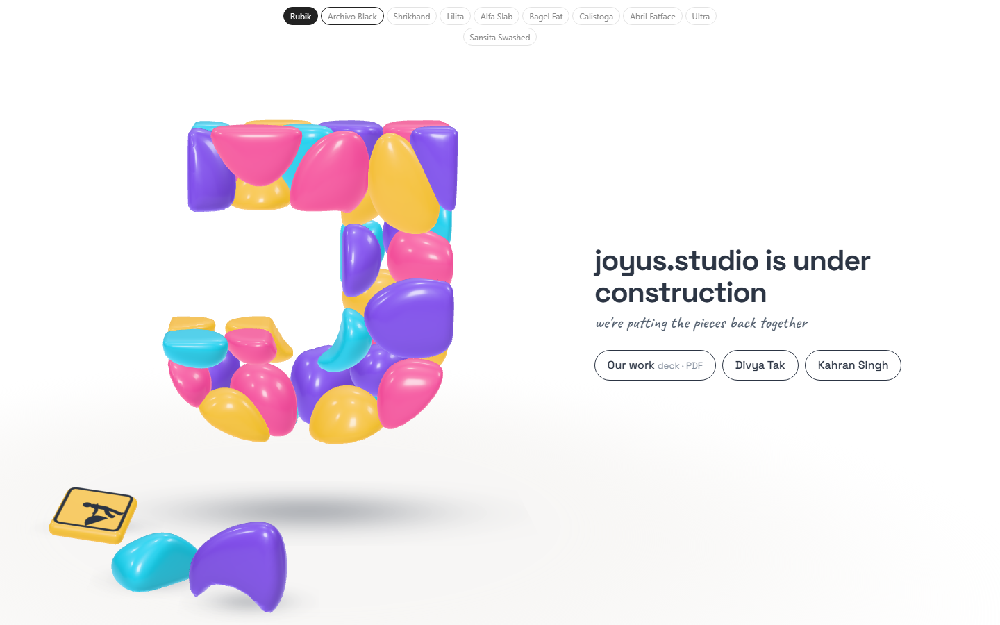
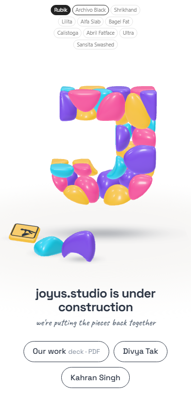
Sansita: stones from the tail
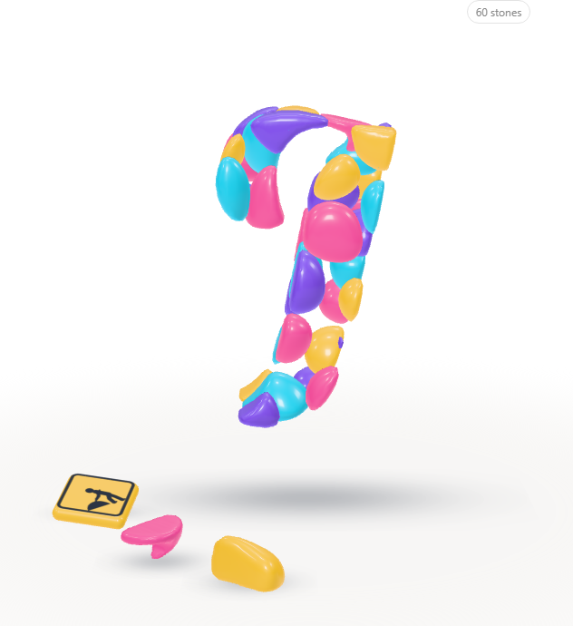
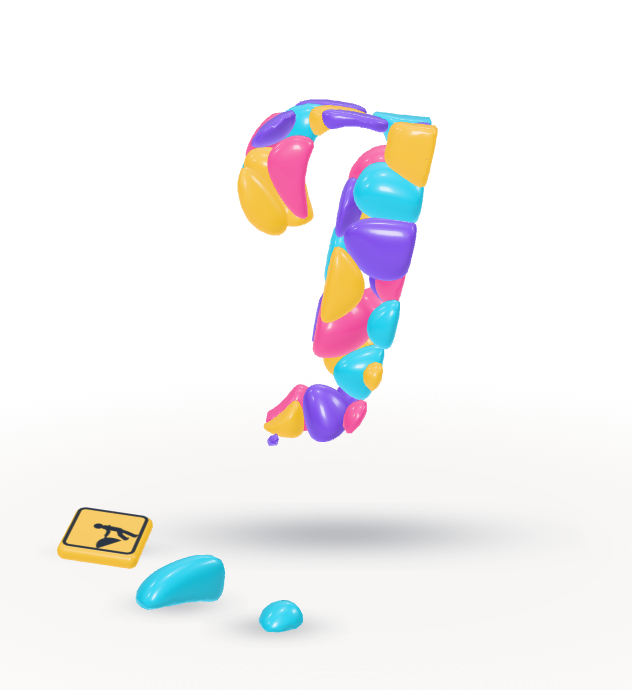
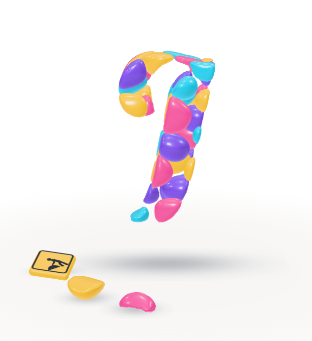
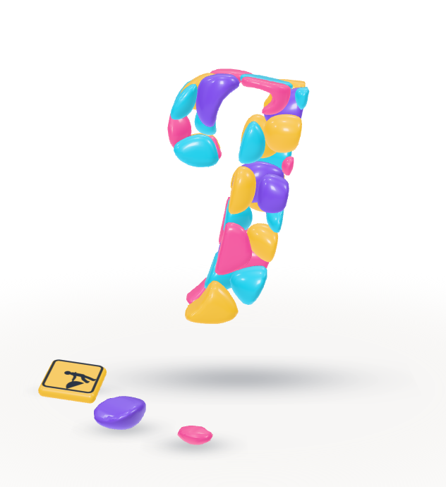
The ten, at forty
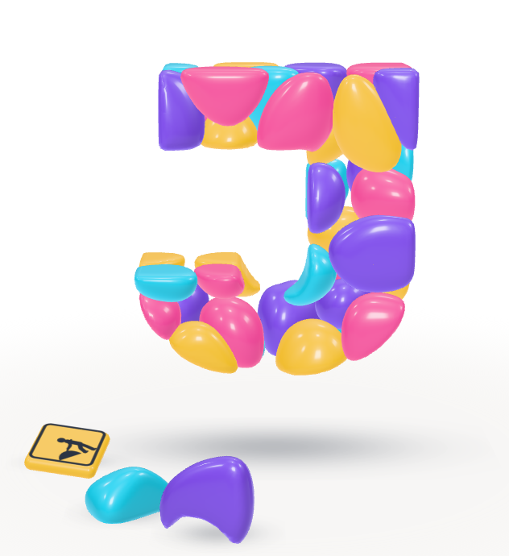
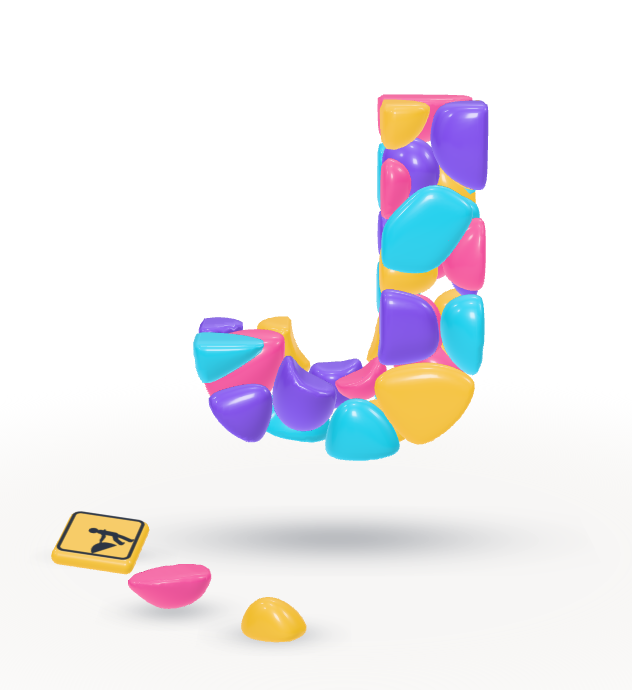
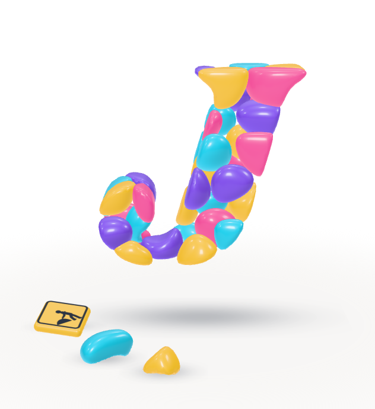
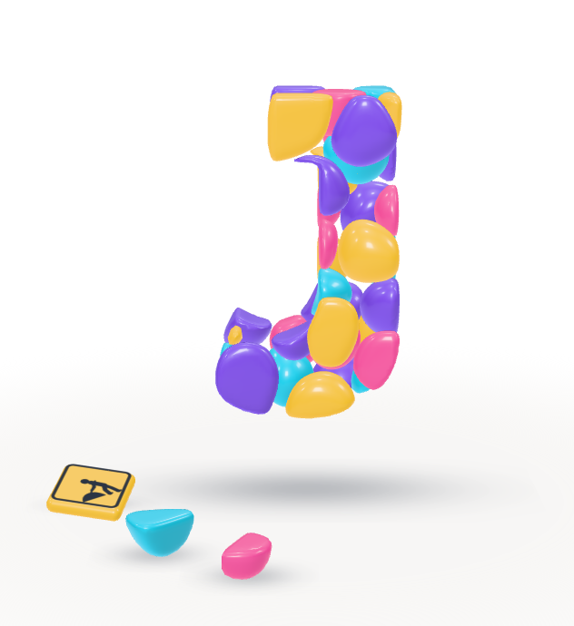
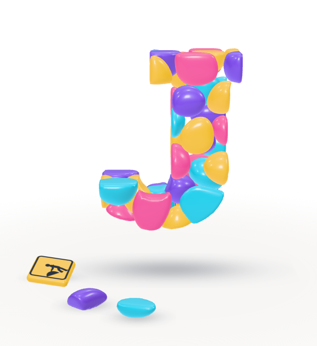
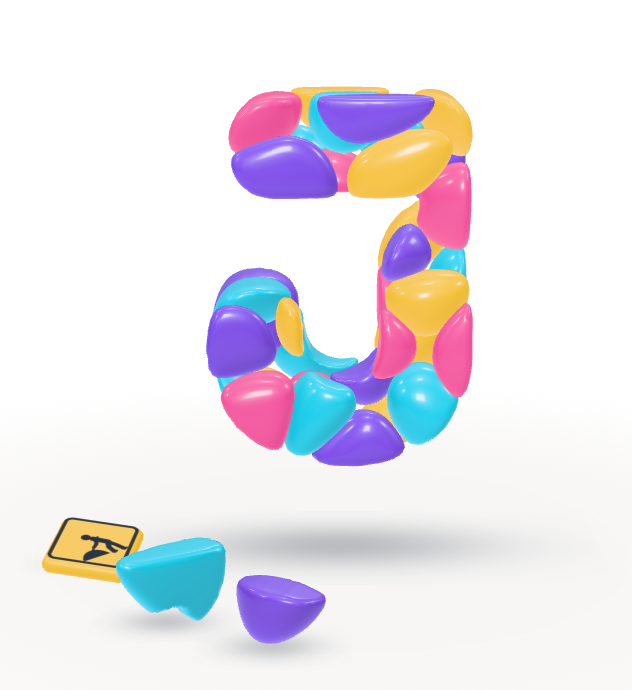
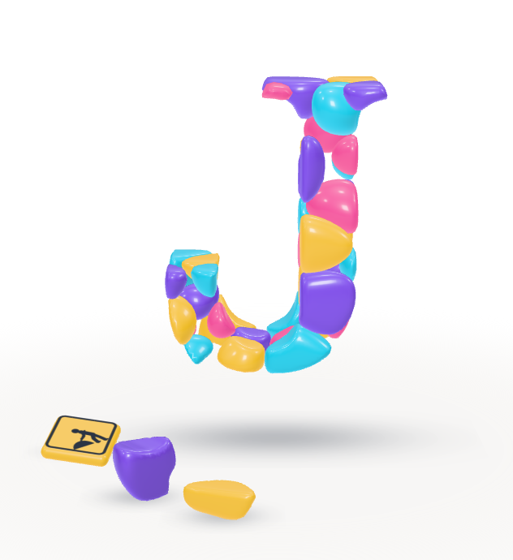
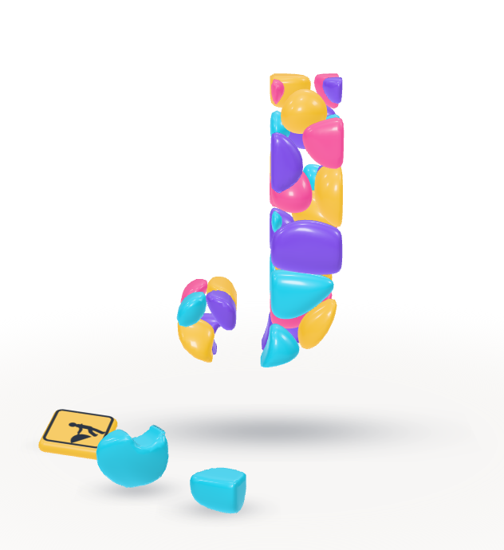
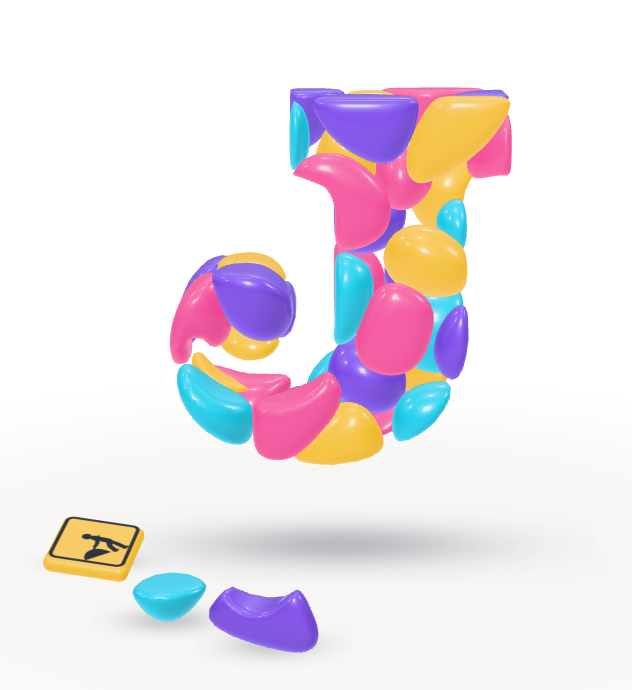
Open
- The fonts, in the end: ten cycle now.
- Should every font take its fallen stones from the tail (the base crumbles), or only Sansita?
Which stones fall: the two smallest on the outline; for Sansita, only among those in the lowest 35% of the letter (FALL_FROM). Test: page-test.mjs, 42 checks in a browser; read by check.cjs.